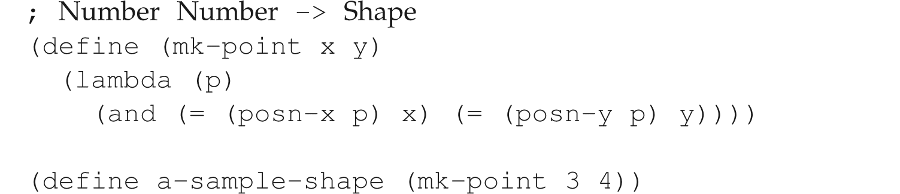
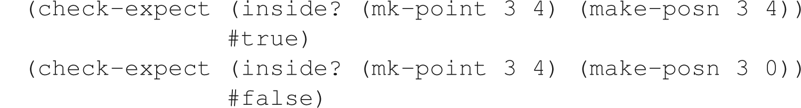
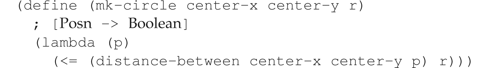
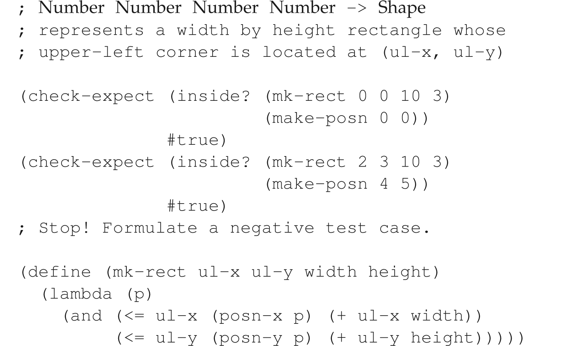
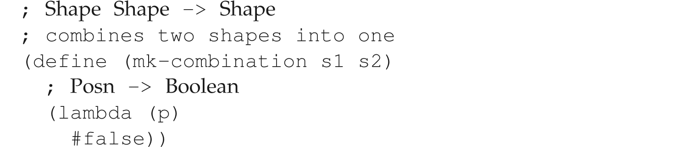
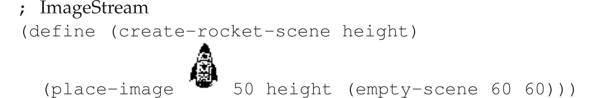

17.5 Representing with lambda
Because functions are first-class values in ISL+, we may think of them as another form of data and use them for data representation. This section provides a taste of this idea; the next few chapters do not rely on it. Its title uses “abstracting” because people consider data representations that use functions as abstract.
As always, we start from a representative problem:
Sample Problem Navy strategists represent fleets of ships as rectangles (the ships themselves) and circles (their weapons’ reach). The coverage of a fleet of ships is the combination of all these shapes. Design a data representation for rectangles, circles, and combinations of shapes. Then design a function that determines whether some point is within a shape.
This problem is also solvable with a self-referential data representation that says a shape is a circle, a rectangle, or a combination of two shapes. See the next part of the book for this design choice.
The problem comes with all kinds of concrete interpretations, which we leave out here. A slightly more complex version was the subject of a programming competition in the mid-1990s run by Yale University on behalf of the US Department of Defense.
One mathematical approach considers shapes as predicates on points. That is, a shape is a function that maps a Cartesian point to a Boolean value. Let’s translate these English words into a data definition:
; A Shape is a function:
; [Posn -> Boolean]
; interpretation if s is a shape and p a Posn, (s p)
; produces #true if p is in s, #false otherwise
Its interpretation part is extensive because this data representation is so unusual. Such an unusual representation calls for an immediate exploration with examples. We delay this step for a moment, however, and instead define a function that checks whether a point is inside some shape:
; Shape Posn -> Boolean
(define (inside? s p)
(s p))
Doing so is straightforward because of the given interpretation. It also turns out that it is simpler than creating examples, and, surprisingly, the function is helpful for formulating data examples.
Stop! Explain how and why inside? works.
Now let’s return to the problem of elements of Shape. Here is a simplistic element of the class:
; Posn -> Boolean
(lambda (p) (and (= (posn-x p) 3) (= (posn-y p) 4)))
As required, it consumes a Posn p, and its body compares the coordinates of p to those of the point (3,4), meaning this function represents a single point. While the data representation of a point as a Shape might seem silly, it suggests how we can define functions that create elements of Shape:

We use “mk” because this function is not an ordinary constructor.
Stop again! Convince yourself that the last line creates a data representation of (3,4). Consider using DrRacket’s stepper.
If we were to design such a function, we would formulate a purpose statement and provide some illustrative examples. For the purpose we could go with the obvious:
; creates a representation for a point at (x,y)
or, more concisely and more appropriately,
; represents a point at (x,y)
For the examples we want to go with the interpretation of Shape. To illustrate, (mk-point 3 4) is supposed to evaluate to a function that returns #true if, and only if, it is given (make-posn 3 4). Using inside?, we can express this statement via tests:

In short, to make a point representation, we define a constructor-like function that consumes the point’s two coordinates. Instead of a record, this function uses lambda to construct another function. The function that it creates consumes a Posn and determines whether its x and y fields are equal to the originally given coordinates.
Next we generalize this idea from simple points to shapes, say circles. In your geometry courses, you learn that a circle is a collection of points that all have the same distance to the center of the circle—the radius. For points inside the circle, the distance is smaller than or equal to the radius. Hence, a function that creates a Shape representation of a circle must consume three pieces: the two coordinates for its center and the radius:
; Number Number Number -> Shape
; creates a representation for a circle of radius r
; located at (center-x, center-y)
(define (mk-circle center-x center-y r)
…)
Like mk-point, it produces a function via a lambda. The function that is returned determines whether some given Posn is inside the circle. Here are some examples, again formulated as tests:
(check-expect
(inside? (mk-circle 3 4 5) (make-posn 0 0)) #true)
(check-expect
(inside? (mk-circle 3 4 5) (make-posn 0 9)) #false)
(check-expect
(inside? (mk-circle 3 4 5) (make-posn -1 3)) #true)
The origin, (make-posn 0 0), is exactly five steps away from (3,4), the center of the circle; see chapter 5.4. Stop! Explain the remaining examples.
Exercise 296. Use compass-and-pencil drawings to check the tests. 
Mathematically, we say that a Posn p is inside a circle if the distance between p and the circle’s center is smaller than the radius r. Let’s wish for the right kind of helper function and write down what we have.

The distance-between function is a straightforward exercise.
Exercise 297. Design the function distance-between. It consumes two numbers and a Posn: x, y, and p. The function computes the distance between the points (x, y) and p.
Domain Knowledge The distance between (x0, y0) and (x1, y1) is
that is, the distance of (x0 − y0, x1 − y1) to the origin.
The data representation of a rectangle is expressed in a similar manner:

Its constructor receives four numbers: the coordinates of the upper-left corner, its width, and height. The result is again a lambda expression. As for circles, this function consumes a Posn and produces a Boolean, checking whether the x and y fields of the Posn are in the proper intervals.
At this point, we have only one task left, namely, the design of function that maps two Shape representations to their combination. The signature and the header are easy:

Indeed, even the default value is straightforward. We know that a shape is represented as a function from Posn to Boolean, so we write down a lambda that consumes some Posn and produces #false, meaning it says no point is in the combination.
So suppose we wish to combine the circle and the rectangle from above:
(define circle1 (mk-circle 3 4 5))
(define rectangle1 (mk-rect 0 3 10 3))
(define union1 (mk-combination circle1 rectangle1))
Some points are inside and some outside of this combination:
(check-expect (inside? union1 (make-posn 0 0)) #true)
(check-expect (inside? union1 (make-posn 0 9)) #false)
(check-expect (inside? union1 (make-posn -1 3)) #true)
Since (make-posn 0 0) is inside both, there is no question that it is inside the combination of the two. In a similar vein, (make-posn 0 -1) is in neither shape, and so it isn’t in the combination. Finally, (make-posn -1 3) is in circle1 but not in rectangle1. But the point must be in the combination of the two shapes because every point that is in one or the other shape is in their combination.
This analysis of examples implies a revision of mk-combination:
; Shape Shape -> Shape
(define (mk-combination s1 s2)
; Posn -> Boolean
(lambda (p)
(or (inside? s1 p) (inside? s2 p))))
The or expression says that the result is #true if one of two expressions produces #true: (inside? s1 p) or (inside? s2 p). The first expression determines whether p is in s1 and the second one whether p is in s2. And that is precisely a translation of our above explanation into ISL+.
Exercise 298. Design my-animate. Recall that the animate function consumes the representation of a stream of images, one per natural number. Since streams are infinitely long, ordinary compound data cannot represent them. Instead, we use functions:
; An ImageStream is a function:
; [N -> Image]
; interpretation a stream s denotes a series of images
Here is a data example:

You may recognize this as one of the first pieces of code in the Prologue.
The job of (my-animate s n) is to show the images (s 0), (s 1), and so on at a rate of 30 images per second up to n images total. Its result is the number of clock ticks passed since launched.
Note This case is an example where it is possible to write down examples/test cases easily, but these examples/tests per se do not inform the design process of this big-bang function. Using functions as data representations calls for more design concepts than this book supplies.
Exercise 299. Design a data representation for finite and infinite sets so that you can represent the sets of all odd numbers, all even numbers, all numbers divisible by 10, and so on.
Design the functions add-element, which adds an element to a set; union, which combines the elements of two sets; and intersect, which collects all elements common to two sets.
Hint Mathematicians deal with sets as functions that consume a potential element ed and produce #true only if ed belongs to the set.